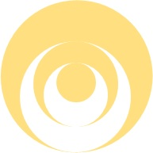

Написано 15 мая 2021 г. на форуме ЛЛ
К слову сказать, язык эзотерической аллегории описания сюжетов сказок придумал не я. И даже не Пелевин. Я этот стиль давно тому назад встретил как раз в исполнении одного из "продвинутых" участников "старой школы", когда-то собиравшихся в одном и том же более менее месте, где, в определенном смысле, собиралась (и создавалась) "кастанедовская ру тусовка" еще в начале "нулевых". Я долго (уже в последнее время, когда это действие заимело практический смысл) "подбивал клинья" в направлении того, как бы "позаимствовать хорошее", у тех, кому его все равно не жалко, а, возможно, уже и совсем "без разницы". В той старой работе было описание истории про Снежную королеву. Я бы ее описал совершенно иначе (скорее всего, только "внешне" иначе, а внутренне и по сути точно также, ибо нет ничего нового под Луной).
Кай и Герда - это, условно говоря, душа и тело, или разум и воля, или эго-личность и эго-сущность (высшее и низшее эго - две последовательные формы одного и того же по сути явления в человеке, называемое в Науке Каббала (НК) "желанием получать"). В начале, "когда они были совсем еще детьми", они были дружны во всем и жили не разлей-вода. Пока ими обоими управляла "третья", внешняя ступень - "бабушка", кроме мнения и желания которой ничего по-настоящему не существовало. Бабушка рассказывала (читала) им сказки о Силе, и из в одной из этих сказок они узнали про разбитое троллем Зеркало, которое разлетелось по Миру в виде миллионов осколков. Если такой осколок попадает в глаз человека, то он начинает видеть все хорошее, что есть в Мире, в плохом Свете, и наоборот, радоваться и потворствовать плохому, видя его, как будто оно и есть добро. А если попадет в сердце, он перестанет чувствовать красоту мира и любовь к нему людей. И потеряет, разумеется, способность их любить и чувствовать. Все, что остается в его жалком подобии жизни - сухой механистический разум, безжизненно проговаривающей формы целей, намерений и стремлений других людей, которые считает нормой общество, без внутреннего понимания того, в чем их причина, смысл и суть для живого человека, идущего по Пути сердца (независимо "просто" человека этого мира или воина-духовного "идущего").
В Книге Зоар (НК) эти два свойства называются "захаром и нуквой" (активным и пассивным, или мужским и женским, аспектами) "клипы" - формы существования зла и лжи, значимых в контексте духовного Пути человека, в мире). В "авраамической" традиционной форме "разбитое зеркало" называется "яблоком раздора" между первым человеком (Адам Ришон) и Творцом, причиной которого стало действие его жены (жена, или женское свойство в эзотерических и архетипических народных сюжетах указывает на желание, или голос сердца, а мужское свойство, или мужчина - на намерение, или голос разума), совершенное в результате хитрости Змея, а не в результате злого умысла, но при повторном своем совершении уже приобрело качество "команды Орла", уклониться от следования которой невозможно. В учении Кастанеды это обычное и повышенное состояние сознания, взаимно обусловленные реальностью общей реальностью Пути воина.
Как известно, всякая помеха на духовном Пути человека является, в действительности, формой помощи ему на этом Пути Духа "от обратного", т.е. без сознательного предваряющего эту помощь намерения самого человека, выраженного Абстрактному о том, чтобы получить ее. То же самое в точности мы имеем и здесь. Именно посредством происходящего с Каем и Гердой, то есть внутри самого человека, вступившего на Путь воина, между его сердцем и разумом, или формой "светлых мыслей и чистых намерений" в голове и реальностью того, чем он неизменно видит себя занимающимся в повседневной жизни, человек подходит к осознанному восприятию самого себя и Мира тем, чем они являются для мага и воина, что продиктовано исключительно практическими соображениями цели и инструмента достижения цели, подходящего ей по свойствам имеющейся формы и особенностям своего происхождения из стремления к осознанию себя на Пути к духовной Цели. Забегая вперед, можно описать конечный результат этого драматического, долгого и нетривиального процесса, как любовь, которой человек научится любить что или кого бы то ни было, и знание о мире, которым воин научится обладать и проявлять осозанно, то есть не потому, что так ему говорят его разум и сердце, поскольку это и есть - реальность, доступная ему "объективно и независимо", а потому, что в этом заключена суть его свободной воли и несгибаемого намерения, которые обращены строго против противостоящей ему воле всей реальности, которая "хочет" доказать ему обратное, что эти любовь и знание - абсурд и вздорный пустой вымысел.
"Снова за окнами белый день, день вызывает меня на бой, я чувствую, закрывая глаза - весь мир идет на меня войной" (В.Цой), "Пусть пророчит мне Ветер Северный беду, я пройду и через это, но себе не изменю, Ветер, бей сильней, раздувай Огонь в крови, Дух мятежный, непокорный, дай мне знать, что впереди - ЧТОБЫ ЖИТЬ ВОПРЕКИ" (В.Кипелов).
Кай поступает в распоряжение Снежной королевы. Этот необходимый этап в жизни воин продиктован необходимостью поступать вопреки всему миру и самому себе. В это время ему кажется, что это нормально, поскольку все остальные люди поступают не так, как он, в виду непоборимых пороков в их осознании себя и мира. В отличие от него самого, и "широко известной в узких кругах" компании единомышленников (таких же как он рабов и марионеток Королевы). Но "точка в центре его сердца" обладает способностью находить правильный Путь в полной перцептуальной, реальной или кажущейся, темноте и безвыходности, поскольку является связью самого человека с Реальностью "уже" исправленной и лишенной пороков и изъянов "черно-белой" формы развития и картины мира, имеющихся у воина на начальных этапах Пути (которая затем "очищается" человеком от парализующего влияния чужих мыслей, чтобы проводить эту Реальность через себя, создавая Мир таким, каким он является на самом деле, посредством приказа своей "точке сборки" выполнять команду Орла как свою собственную). Именно эта связь традиционно называется в эзотерической традиции "Розой" (в НК Розой называется другое явление, хотя понятно, что все со всем на Пути связано, а способность находить Путь в условиях "инвариантной" к правде и лжи собственной природе, равно как и "иллюзорной" Реальности "этого мира", называется просто "верой выше знания"), которую человек взращивает на протяжении Пути (КК называет это Звеном связи Намерения Духа с человеком знания, "оживлению" которого служит целиком весь "Путь воина").
Герда проходит, по мере развития сюжета, и продолжения поисков восстановления (можно так интерпретировать слово "религия", если его понимать на манер английского realign, как "реконструкция" связи человека с Духом) утраченного состояния внутренней гармонии и стремления к устранению возникшего разделения в самом себе человеком, Путь, подобный тому, который проходит Елисей в сказке Пушкина, только "наоборот", и гораздо детальнее описанный, поскольку в нем заключается весь остальной сюжет Сказки.
Интересные факты:
В сюжете рассмотренной Сказки есть есть уйма всего разного, и продолжать рассказ о ней можно, наверное бесконечно.
Так или иначе, в форме комментария об этой Сказке, или о совершенно другой, но Продолжение следует! :-)